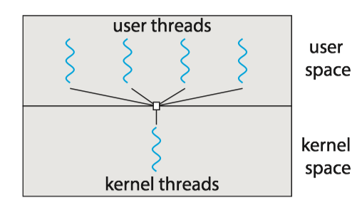

Hadoop和MapReduce入门
来自Udacity课程Introduction to Hadoop and Mapreduce的笔记
Part I Big Data
2 data source
data increases
- phone data
- online store
how to store and process large amounts of data?
3. big data
what is big data?
- order details for a store
- all orders across 100s of stores
- a person's stock portfoio
- all stock transaction for the new york
4. big data solution
big data:
- all orders across 100s of stores
- all stock transaction for the new york
5. Definition of Big Data
big data is data that is too big to process on a single machine
6 challenges
- most data is worthless. false
- data is created fast. true
- data from different sources in various formats. true
8 the 3vs
- volumes: size of data
- reliable storage: find a cheaper way
- variety: data coming from different source and format
- velocity: speed of data generation
9 data worth storing?
- transactions
- logs
- business
- user
- sensor
- medical
- social
all
11 variety
data variety. for a long time, people use sql, mysql, oracle to store their data. the problem is that data needs to be fit in pre-defined tables. and a lot of data we deal these days tend to be unstructured or semi-structured data
15 velocity
TB/day
16 Doug intro
hadoop 之父 doug cutting
Here are the papers Google published about their distributed file system (GFS) and their processing framework, MapReduce
.
17. core hadoop
store in hdfs, process with mapreduce
18. hadoop ecosystem

Part 2 HDFS and MapReduce
Part 3 MapReduce Code
Part 4 MapReduce Design Patterns
Head first Java
Notes, Head first Java, 2nd Edition
- 1 Dive in A Quick Dip
- 2 Classes and objects
- 3 Primitives and references
- 3.1 primitive variable
- 3.2 Reference variable
- 3.3 Array
- 4 Methods use instance variables
- 5 Writing a Program
- 6 Get to know the Java API
- 7 Inheritance and polymorphism
- 8 Interfaces and abstract classes
- 9 Constructors and garbage collection
- 10 Numbers and statics
1 Dive in A Quick Dip
Java has friendly syntax, object-oriented features, memory management, and best of all - the promise of probability (write-one/run-anywhere).
You type a source code file(.java). compile it using the javac compiler, then run(java) the compiled bytecode(.class) on a java virtual machine.

Every Java application has to have at least one class, and at least one main method.
The main method public static void main(String[] args){//your code goes here}is where your program starts running.
Java has three standard looping constructs: while, do-while, and for.
A boolean and an integer are not compatible types in Java.
int x=1;
while (x) {} //wrong
System.out.println inserts a newline, System.out.print keeps printing to the same line.
2 Classes and objects
2.1 Object Oriented
What do you like about OO? Some people say...
- It helps me design in a more natural way. Things have a way of evolving.
- Not messing around with the code I've already tested, just to add a new feature.
- Reusing code in other applications. When I write a new class, I can make it flexible enough to be used in something new, later
2.2 Class
A class describes what an object knows(instance variables) and what an object does(methods).

What's the difference between a class and an object?
- A class is not an object. A class is the blueprint for an object. It tells the JVM how to make an object of that particular type. Each object made from that class have its own values for the instance variables of that class.

2.3 main
The two uses of main:
- to test your real class
- to launch/start your Java application.
3 Primitives and references
Variables must always be declared with a name and a type. Variables come in two flavors: primitive and reference.(变量的生命必须有类型和名称。变量有两种：primitive和引用)
3.1 primitive variable
A primitive variable value is the bits representing the value. primitive变量的值是表示该值的位。
3.2 Reference variable
- A reference variable value is the bits representing a way to get to an object on the heap.引用变量的值是表示一种到达堆上的对象的方法的位。
- A reference variable is like a remote control. Using the dot operator(
.) on a reference variable is like pressing a button on the remote control to access a method or instance variables. - A reference variable has a value of
nullwhen it is not referencing any object.
3.3 Array
- An array is always an object, even if the array is declared to hold primitives.
- Every element in an array is just a variable.
The three steps of object declaration, creation and assignment.
(e.g. Dog myDog = new Dog());
- declare a reference variable: tell the JVM to allocate space for a reference variable, and names that variable myDog
- create an object: tells the JCM to allocate space for a new Dog object on the heap.
- Assigns the object to the reference variable.

4 Methods use instance variables
4.1 Methods
Class define what an object knows and what an object does. Things an object knows are its instance variables(state), things an object does are its methods(behavior).
Methods:
A method uses parameters. A caller passes arguments.
- Arguments are the things you pass into the methods.
- If a method takes a parameters, you must pass it something.
- Methods can return values. Every method is declared is declared with a return type.
- If you declare a method to return a value, you must return a value of the declared type or a value that is compatible with the declared type.
- Java is pass-by-value, which means pass-by-copy.
4.2 Getters and setters
Getters and setters let you, well, get and set things.
- A Getter's sole purpose in life is to send back, as a return value, the value of whatever it is that particular Getter is supposed to be Getting.
4.3 Encapsulation
By forcing everybody to call a setter method, we can protect variables from unacceptable changes.
theCat.height = 0 //yikes! we can't let this happen
public void setHeight(int ht){
if (ht>9){ // we put in checks to guarantee a minimum cat height.
height=ht;
}
}
An encapsulation starter rule of thumb: mark your instances variables private, and provide public getters and setters for access control.
- Encapsulations puts a force-field around instance variables, so nobody can set them to something inappropriate.
- The point to setters (and getters, too) is that you can change your mind later, without breaking anybody else’s code!
class GoodDog {
private int size; //Make the instance variable private
public int getSize() { // make the getter methods public
return size;
}
public void setSize(int s) { // make the setter methods public
size = s;
}
// even though the methods don't really add new functionality,
// the cool thing is that you can change your mind later.
// you can come back and make a method safer, faster, better
void bark() {
if (size > 60) {
System.out.println(“Wooof! Wooof!”);
} else if (size > 14) {
System.out.println(“Ruff! Ruff!”); }
else {
System.out.println(“Yip! Yip!”);
}
}
}
4.4 Instance variables
You don't have to initialize instance variables, because they always have a default value:
- intergers: 0
- floating points: 0.0
- booleans: false
- references: null
4.5 Instance and local variables
The difference between instance and local variables:
- Instance variables are declared inside a class but not within a method.
- Local variables are declares within a method .
- Local variables must be initialized before use.
4.6 Comparing variables
If you want to know if two objects are equal, you need the .equal() method.
- whether two different objects should be treated as equal depends on what makes sense for that particular object type. (e.g. dog/string)
String S = "baby";
S.equal(another_string);
To see if two reference are the same (which means they refer to the same object on the heap) use the == operator.
Foo a = new Foo();
Foo b = new Foo();
Foo c = a;
if (a == b) { // false }
if (a == c) { // true }
if (b == c) { // false }
To compare two primitives, use the == operator.
- Operator
==doesn't care about the size of the variable, so all the extra zeros on the left end don't matter.
int a = 3;
byte b = 3;
if (a==b){ //true}
5 Writing a Program
- prep code: a form of pseudocode, to help you focus on the logic without stressing about syntax. 一种伪代码
- test code: a class or methods that will test the real code and validate that it's doing the right thing. 测试代码
- real code: the actual implementation of the class. 真实代码
Extreme Programming（极限编程):
- Write the test code first
- Make small, but frequent, releases
- Develop in iteration cycles.
6 Get to know the Java API
ArrayList is a class in the core Java library (the API).
-
boolean add(Object elem): Adds the objects parameter to the list(returntrue). -
boolean remove(int index): Removes the object at the index parameter. Returnstrueif the element was in the list. -
boolean remove(Object elem): Removes this object(if it's in the ArrayList). -
boolean contains(Object elem): Returnstrueif there's a match for the object parameter. -
boolean isEmpty(): Returnstrueif the list has no elements -
int indexOf(Object elem): Returns either the index of the object parameter, or -1 -
size(): Return the number of elements currently in the list. -
Object get(int index): Return the object currently at the index parameter.
You have to know the full name of the class you want to use in your code. You have two options:
- Import: put an import statement at the top of your source code file:
import java.util.ArrayList
- Type: type the full name everywhere in your code. Each time you use it.
java.util.ArrayList<Dog> list = new java.util.ArrayList<Dog>();
7 Inheritance and polymorphism
7.1 overriding
Overriding（重写) just means that a subclass redefines one of its inherited methods when it needs to change or extend the behavior of that method.
When one class inherits from another, the subclass inherits from the superclass. In Java, we say that the subclass extends the superclass.子类继承自父类。
Instance variables are not overridden because they don't need to be. They don't define any special behavior, so a subclass can give an inherited instance variable any value it chooses.实例变量无法被覆盖掉是因为不需要，它们并没有定义特殊的行为。
When you want to know if one thing should extend another, apply the IS-A test.若你想要知道某物是否应该要继承另一物时，则可以用IS-A(是一个)测试来检验。
If class B extends class A, class B IS-A class A. 如果类B继承类A，那么类B是一个类A。
if your subclass overriding method, you can call the superclass version using the keyword super.
// this calls the inherited version on roam(),
// then comes back to do your own subclass-specific code
public void roam(){
super.roam();
//my own roam stuff
}
There are four access levels, moving from most restrictive to least, the four access levels are: 四种权限，左边是最受限制的，而越往右边限制程度越小：
prive, default, protected, public
- public members are inherited. public类型的成员会被继承
- private members are not inherited. private类型的成员不会被继承
Inheritances lets you guarantee that all classes grouped under a certain supertype have all the methods that the supertype has. In other words, you define a common protocol for a set of classes related through inheritance. 继承让你可以确保某个父类型之下的所有类都会有父类型所持有的全部方法。也就是说，你会通过继承来定义相关类间的共同协议。
when you define a supertype for a group of classes, any subclass of that supertype can be substituted where the supertype is expected.
当你定义出一组类的父型时，你可以用子型的任何类来填补任何需要或期待父型的位置。
7.2 Polymorphism
With polymorphism, the reference type can be a superclass of the actual object type. 运用多态时，引用类型可以是实际对象类型的父类。
Animal[] animals = new Animal[3];
animals [0] = new Dog();
animals [1] = new Cat();
animals [2] = new Lion();
for (int i=0; i< animals.length; i++) {
animals[i].eat();
animals[i].roam();
}
You can have polymorphic arguments and return types. 参数和返回类型也可以多态。
class Vet {
public void giveShot(Animal a) {
// do horrible things to the Animal at
// the other end of the ‘a’ parameter
a.makeNoise();
}
}
class PetOwner {
public void start() {
Vet v = new Vet();
Dog d = new Dog();
Hippo h = new Hippo();
v.giveShot(d);
v.giveShot(h);
}
If I write my code using polymorphic arguments, where I declare the method parameter as a superclass type, I can pass in any subclass object at runtime. 如果我将程序代码编写使用多态参数，也就是说将参数声明为父类类型，我就可以在运行时传入任何的子类对象。
With polymorphism, you can write code that doesn't have to change when you introduce new subclass types into the program. 通过多态，你就可以编写出引进新型子类时也不必修改的程序。
There are three things that can prevent a class from being subclassed.
- A class can be non-public (if you don't declare the class as public. A non-public class can be subclassed only by classes in the same package as the class. 类可以是非公有的，非公有的类只能被同一个包的类作出子类。
- Using keyword modifier
finalto stop a class from being subclassed. 使用final修饰符阻止类被继承。 - If a class has only
privateconstructors, it can't be subclassed. 如果类只拥有private的构造程序，它不能被继承。
If you want to protect a specific method from being overridden, mark the method with the final modifier. 如果你想要防止特定的方法被覆盖，可以将该方法标识成final表示没有任何的方法可以被覆盖。
Rules for overriding:
- Arguments must be the same, and return types must be compatible. 参数必须要一样，且返回类型必须要兼容
- The method can't be less accessible. 不能降低方法的访问权限
7.3 Method overloading
Method overloading(方法重载) is nothing more than having two methods with the same name but different argument lists. 方法重载就是方法名称相同，但参数列表不同。
- Purpose: overloading lets you make multiple versions of a method, with different argument lists, for convenience to the callers. 重载可以有同一方法的多个不同参数列表的版本，方便了调用者。
- The return types can be different 返回类型可以不同
- You can't change only the return type 不能只改变返回类型
- You can vary the access levels in any direction 可以更改访问权限
8 Interfaces and abstract classes
What's an interface? it's a 100% abstract class.
What's an abstract class? it's a class that can't be instantiated.
Abstract classes
Here's where it gets weird:
Animal anim = new Animal();
There two are the same type, but what the heck does an Animal object look like?
Some classes just should not be instantiated!
How? By marking the class as abstract, the compiler will stop any code, anywhere, from ever creating an instance of that type. i.e. prevent a class from ever being instantiated.
Making a class abstract before the class declaration:
abstract class Caine extends Animal {
public void roam() {}
}
When you're designing your class inheritance structure, you have to decide which classes are abstract and which are concrete.
- Concrete classes are those that are specific enough to be instantiated.
- A concrete class just means that it's OK to make objects of that type.
- An abstract class has virtually no use, no value, no purpose in life, unless it is extended.
Abstract methods
An abstract method means the method must be overriden, whereas an abstract class means the class must be extended.
- there isn't any code that would make sense in the abstract method, you won't put in a method body. e.g.
public abstract void eat(). - If you declare an abstract method, you must mark the class abstract as well. You can't have an abstract method in a non-abstract class.
- You must implement all abstract methods.
the ultimate superclass: Object
Every class in Java extends class Object. Class Object is the mother of all classes; it's the superclass of everything. Java中的每个类都是从Object这个类继承出来的。Object类是所有类的妈妈，他是所有类的父类。
- Any class that doesn't explicitly extend another class, implicitly extends Object.
Methods of Object class:
equals(): tell you if two objects are considered equal.getClass(): Gives you back the class that object was instantiated from.hashCode(): Prints out a hashcode for the objecttoString(): Prints out a String message with the name of the class and some other number we rarely care about.
Object is a non-abstract class because it's got method implementation code that all classes can inherit and use out-of-box, without having to override the methods.
The Object class serves two main purpose:
- to act as a polymorphic type for methods that need to work on any class that you or anyone else makes 作为方法的多态类型
- to provide real method code that all objects in Java need at runtime (and putting them in class Object means all other classes inherit them).提供Java在执行期堆任何对象都有需要的实现方法代码。
Using polymorphic references of type Object has a price
When you put an object into an ArrayList<Dog>, it goes in as a Dog, and coms out as a Dog:
// Make an ArrayList declared to hold Dog objects.
ArrayList<Dog> myDogArrayList = new ArrayList<Dog>();
// Make a Dog
Dog aDog = new Dog();
// Add the Dog to the list
myDogArrayList.add(aDog);
//Assign the Dog from the list to a new Dog reference variable
Dog d = myDogArrayList.get(0);
Everything comes out of an ArrayList<Object> as a reference of type Object, regardless of what the actual object is. 任何从ArrayList<Object>取出的东西都会被当作Object类型的引用，而不管它原来是什么。
// make an ArrayList declared to hold any type of Object
ArrayList<Object> myDogArrayList = new ArrayList<object>()
// make a Dog
Dog aDog = new Dog();
// Add the Dog to the list
myDogArrayList.add(aDog);
// No!! Won't compile!! the get() method returns type Object.
// The compiler knows only that the object inherits from Object,
// but it doesn't know it's a Dog!!
Dog d = myDogArrayList.get(0)
The compiler decides whether you can call a method based on the reference type, not the actual object type.:
Object o = al.get(index);
// Class Object has a hashCode() method
// so you can call that method on any object in Java
int i = o.hashCode();
// Can't do this!! the Object class has no idea what it means to bark().
o.bark();

If you're sure the object is really a Dog, you can make a new Dog reference to it by copying the Object reference, and forcing that copy to go into a Dog reference variable, using a cast (Dog).
Object o = al.get(index);
// cast the Object back to a Dog we know is there.
Dog d = (Dog) o;
d.roam();
If you're not sure it's a Dog, you can use the instanceof operator to check.
if (o instanceof Dog) {
Dog d = (Dog) o;
}
Interface
Questions: what if you want to add Dog some Pet behaviors?
Option one: We take the easy path, and put pet method in class Animal.
- Pros: All the Animals will instantly inherit the pet behaviors. We won't have to touch the existing Animal subclasses at all.
- Cons: Some animals like lion, wolf are not a pet. Non-pet Animals running around with pet methods.
Option two: We start with option one, putting the pet methods in class Animal, but we make the methods abstract.
- Pros: All classes must override the methods, but they can make the methods "do-nothings".
- Cons: Waste a lot of time to implement every concrete Animal subclasses.
Options three: Put the pet methods Only in the classes where they belong.
- Pros: The methods are where they belong, and only where they belong.
- Cons: Firstly, you'd have to agree to a protocol, and all programmers of pet Animal classes now and in the future would have to know about the protocol. Secondly, you don't get to use polymorphism for the pet methods
It looks like we need two superclasses at the top.

It’s called "multiple inheritance"(多重继承) and it can be a Really Bad Thing. Because multiple inheritance has a problem known as The Deadly Diamond of Death(致命的死亡砖石)

Java的方案: Interface!!!
- A Java interface(接口) solves multiple inheritance problem by giving you much of the polymorphic benefits of multiple inheritance without the pain and suffering from the Deadly Diamond of Death.
How?
- surprisingly simple: make all the methods abstract
- A Java interface is like a 100% pure abstract class.
To define an interface:
//use the keyword "interface" instead of "class"
public interface Pet {}
To implement an interface:
// Use the keyword "implements" followed by the interface name.
public class Dog extends Canine implements Pet {}
A class can implement multiple interfaces!
public class Dog extends Animal implements Pet, Saveable, Paintable {}
Classes from different inheritance trees can implement the same interface.

How do you know whether to make a class, subclass, an abstract class, or an interface?
- Make a class that doesn’t extend anything (other than Object) when your new class doesn’t pass the IS-A test for any other type.
- Make a subclass (in other words, extend a class) only when you need to make a more specific version of a class and need to override or add new behaviors.
- Use an abstract class when you want to define a template for a group of subclasses, and you have at least some implementation code that all subclasses could use. Make the class abstract when you want to guarantee that nobody can make objects of that type.
- Use an interface when you want to define a role that other classes can play, regardless of where those classes are in the inheritance tree.
Using super
What if you don't want to replace the method with an override in a concrete subclass, but you just want to add to it with some additional specific code?
abstract class Report {
void runReport() {
// set-up report
}
void printReport() {
// generic printing
}
}
class BuzzwordsReport extends Report {
void runReport() {
// call superclass version, then come back and do some
// subclass-specific stuff
super.runReport();
buzzwordCompliance();
printReport();
}
void buzzwordCompliance() {...}
}

9 Constructors and garbage collection
10 Numbers and statics
Operating System Concepts 4 - Threads & Concurrency
- 1 Overview
- 2 Multicore Programming
- 3 Multithreading Models
- 4 Thread Libraries
- 5 Implicit threading
- 6 Threading Issues
1 Overview
A thread is a basic unit of CPU utilization; it comprises a thread ID, a program counter, a register set, and a stack.
线程是一个CPU利用的基本单元，它由线程ID，程序计数器、寄存器集合和栈组成。
A traditional process has a single thread of control. If a process has multiple threads of control, it can perform more than one task at a time.
一个传统的进程只有单个控制线程，如果进程有多个控制线程，那么它能一次处理多个任务。
The figure below illustrates the difference between a traditional single-threaded process and a multithreaded process.

1.1 Motivation
Process creation is time consuming and resource intensive. It is generally more efficient to use one process that contains multiple threads.
1.2 Benefits
The benefits of multithreaded programming can be broken down into four major categories:
Responsiveness
- It allows a program to continue running even if part of it is blocked or is performing a lengthy operation, thereby increasing responsiveness to the user.
- 响应度高：即使程序部分阻塞或执行较冗长操作，该程序仍能继续执行，从而增加了对用户的相应程度。
Resource sharing
- Processes can share resources only through techniques such as shared memory and message. Such techniques must be explicitly arranged by the programmer.
- Threads share the memory and the resources of the process to which they belong by default.
- 资源共享：线程默认共享它们所属进程的内存和资源。代码和数据共享的优点是它允许一个应用程序在同一地址空间有多个不同的活动线程。
Economy
- Allocating memory and resources for process creation is costly. Because threads share the resources of the process to which they belong, it is more economical to create and context-switch threads.
- 经济：进程创建所需要的内存和资源的分配比较昂贵。由于线程能共享它们所属进程的资源，所以创建和切换线程会更为经济。
Scalability
- The benefits of multithreading can be even greater in a multiprocessor architecture, where threads may be running in parallel on different processing cores.
- 可扩展性: 多线程的优点之一是能充分使用多处理器体系结构。以便每个进程能并行运行在不同的处理器上。
2 Multicore Programming
On a system with a single computing core, concurrency merely means that the execution of the threads will be interleaved over time, because the processing core is capable of executing only one thread at a time.
On a system with multiple cores, however, concurrency means that some threads can run in parallel, because the system can assign a separate thread to each core.

Note: Concurrency v.s. Parallelism
- Concurrency: supports more than one task by allowing all the tasks to make progress.
- Parallelism: perform more than one task simultaneously.
2.1 Programming Challenges
- Identifying tasks. This involves examining applications to find areas that can be divided into separate, concurrent tasks.
- Balance. Programmer must ensure that the tasks perform equal work of equal value.
- Data splitting. The data accessed and manipulated by the tasks must be divided to run on separate cores.
- Data dependency. The data accessed by the tasks must be examined for dependencies between two or more tasks.
- Testing and debugging. Testing and debugging such concurrent programs is inherently more difficult than testing and debugging single-threaded applications.
2.2 Types of Parallelism
In general, there are two types of parallelism: data parallelism and task parallelism.
- Data parallelism focuses on distributing subsets of the same data across multiple computing cores and performing the same operation on each core.
- Task parallelism involves distributing not data but tasks (threads) across multiple computing cores.
- However, data and task parallelism are not mutually exclusive, and an application may in fact use a hybrid of these two strategies.
Data and task parallelism

3 Multithreading Models
Support for threads may be provided either at the user level, for user threads, or by the kernel, for kernel threads.
- User threads are supported above the kernel and are managed without kernel support.
- Kernel threads are supported and managed directly by the operating system.
有两种不同的方法来提供线程支持：用户层的用户级线程和内核层的内核级线程。用户级线程受内核支持，而无需内核管理；而内核级线程由操作系统直接支持和管理。事实上所有当代操作系统都支持内核级线程。
Ultimately, a relationship must exist between user threads and kernel threads. There are three common ways of establishing such a relationship: the many-to-one model, the one-to-one model, and the many-to-many model.
在用户级线程和内核级线程之间必然存在一种关系。有三种普遍建立这种关系的方法：多对一模型、一对一模型、多对多模型。
3.1 Many-to-One Model
The many-to-one model maps many user-level threads to one kernel thread. 多对一模型将许多用户级线程映射到一个内核线程。
- Thread management is done by the thread library in user space, so it is efficient. 线程管理由线程库在用户空间进行的，因而效率比较高。
- Also, because only one thread can access the kernel at a time, multiple threads are unable to run in parallel on multicore systems. 因为任意时刻只能有一个线程能够访问内核，多个线程不能并行运行在多处理器上。

3.2 One-to-One Model
The one-to-one model maps each user thread to a kernel thread. 一对一模型每个用户线程映射到一个内核线程。
- It provides more concurrency by allowing another thread to run when a thread makes a blocking system call. 该模型在一个线程执行阻塞系统调用时，能允许另一个线程继续执行，提供了更高的并发性。
- It also allows multiple threads to run in parallel on multiprocessors. 它也允许多个线程能并行运行在多处理器系统上。
- The only drawback to this model is that creating a user thread requires creating the corresponding kernel thread, and a large number of kernel threads may burden the performance of a system. 这种模型的唯一缺点是每创建一个用户线程就会创建一个相应的内核线程, 大量内核线程会影响系统性能。

3.3 Many-to-Many Model
The many-to-many model multiplexes many user-level threads to a smaller or equal number of kernel threads. 多对多模型多路复用了许多用户线程到同样数量或更小数量的内核线程上。
- Developers can create as many user threads as necessary. 开发人员可创建任意多的用户线程。
- The corresponding kernel threads can run in parallel on a multiprocessor. 相应内核线程能在多处理器系统上并发执行。
- Also, when a thread performs a blocking system call, the kernel can schedule another thread for execution. 而且当一个线程执行阻塞系统调用时，内核能调度另一个线程来执行。
- In practice it is difficult to implement. 实际上难以实施。

Most operating systems now use the one-to-one model.
3.4 User/Kernel-Level threads
(1) User-Level Threads(用户级线程)
Advantages
- Common operations can be implemented efficiently
- Interface can be tailored to application needs
Issues:
- A blocking system call blocks all user-level threads. 阻塞系统调用能够阻塞所有用户级线程。
- Asynchronous system calls can provide partial work-around. 非同步系统调用能提供部分work-around. view the definition of work-around here
- A page fault blocks all user-level threads. 缺页异常阻塞所有用户级线程。
- Matching threads to CPUs in a multiprocessor is hard：
- No knowledge about the numbers of CPUs available to address space
- No knowledge when a thread blocks
(2) Kernel-Level Threads (内核级线程)
Primary advantage
- Blocking system calls and page faults handled correctly
Issues
- Cost of performing thread operations
- Create, exit, lock, signal, wait all require user/kernel crossings
NOTE: The term virtual processor is often used instead of kernel thread.
4 Thread Libraries
A thread library provides the programmer with an API for creating and managing threads. 线程库为程序员提供了创建和管理线程的API。
Pthreads, the threads extension of the POSIX standard, may be provided as either a user-level or a kernel-level library. Pthread作为POSIX标准扩展，可以提供用户级或内核级的库。
pthread_t tid: declares the identifier for the threadpthread attr_t attr: declares the attributes for the threadpthread_attr_init(&attr): initialize thread attributes objectpthread_create(): create a new threadpthread_join(): join with a terminated threadpthread_exit(): terminate calling thread
Note: Compile and link with -pthread.
pthread详细用法和实例, 见POSIX thread (pthread) libraries
5 Implicit threading
Implicit threading(隐式线程): Transfers the creation and management of threading from application developers to compilers and run-time libraries.
- One way to address difficulties and better support the design of concurrent and parallel applications
- The advantage of this approach is that developers only need to identify parallel tasks, and the libraries determine the specific details of thread creation and management.
In this section, we explore four alternative approaches to designing applications that can take advantage of multicore processors through implicit threading:
- Thread Pools
- Fork Join
- OpemMP
- Grand Central Dispatch
5.1 Thread Pools
Two main issues exist:
- The thread will be discarded once it has completed its work. 线程在完成工作之后就要被丢弃
- Unlimited threads could exhaust system resources. 无限制的线程会耗尽系统资源
Solution -> thread pool(线程池)
- It creates a number of threads at start-up, and places them into a pool, where they sit and wait for work.
- When a server receives a request, it submits the request to the thread pool and resumes waiting for additional requests.
- If there is an available thread in the pool, it is awakened, and the request is serviced immediately.
- If the pool contains no available thread, the task is queued until one becomes free.
线程池的思想是在进程开始时创建一定数量的线程，并放入到池中以等待工作。当服务器收到请求时，它会唤醒线程池中的一个线程，并将要处理的请求传递给它，一旦线程完成了服务，它会返回到池中在等待工作。如果池中没有可用的线程，那么服务器会一直等待直到有空线程为止。
Thread pools offer these benefits:
- Servicing a request with an existing thread is often faster than waiting to create a thread. 通常用现有线程处理请求要比等待创建新的线程要快.
- A thread pool limits the number of threads that exist at any one point. 线程池限制了在任何时候可用线程的数量.
- Separating the task to be performed from the mechanics of creating the task allows us to use different strategies for running the task.
Java线程库的一个例子：
import java.util.concurrent.*;
public class ThreadPoolExample
{
public static void main(String[] args) {
int numTasks = Integer.parseInt(args[0].trim());
/* Create the thread pool */
ExecutorService pool = Executors.newCachedThreadPool();
/* Run each task using a thread in the pool */
for (int i = 0; i < numTasks; i++)
pool.execute(new Task());
/* Shut down the pool once all threads have completed */
pool.shutdown();
}
5.4 Grand Central Dispatch
Grand Central Dispatch (GCD) is a technology for Apple's Mac OS X and iOS operating systems. It is a combination of extensions to the C languages, an API, and a run-time library that allows application developers identify sections of code to run in parallel.
- GCD identifies two types of dispatch queues: serial and concurrent.
6 Threading Issues
6.1 Light Weight Process
Many systems implementing either the many-to-many or the two-level model place an intermediate data structure between the user and kernel threads. This data structure—typically known as a lightweight process（轻量级进程）, or LWP.
- To the user-thread library, the LWP appears to be a virtual processor on which the application can schedule a user thread to run.
- Each LWP is attached to a kernel thread.
- If a kernel thread blocks, the LWP blocks as well. Up the chain, the user-level thread attached to the LWP also blocks.


where K denotes kernel threads and P denotes Process.
下面是一个测试LINUX中LWP的C程序
/* filename: test_LWP.c */
#include <stdlib.h>
#include <pthread.h>
#include <stdio.h>
#include <unistd.h>
int* thread(void* arg)
{
pthread_t tid; // the ID of a thread
tid = pthread_self();//get the current thread's id
printf("The ID of new thread is =%lu\n", tid);
sleep(500); //sleep for 500 seconds
return NULL;
}
int main()
{
pthread_t tid;
printf("The ID of main thread is %lu\n", pthread_self()); //get the main thread's id
if (pthread_create(&tid, NULL, (void *) thread, NULL) !=0)
{
printf("Thread creation failed\n");
exit(1);
}
printf("my Id is %lu, new thread ID is %lu\n", pthread_self(), tid);
sleep(1000);
return 0;
}
运行ps -efL 可以看到, test_LWP进程(PID=1953)有两个LWP，即NLWP(number of light weight process)=2。
UID PID PPID LWP C NLWP STIME TTY TIME CMD
vagrant 1953 1644 1953 0 2 04:16 pts/0 00:00:00 ./test_LWP
vagrant 1953 1644 1954 0 2 04:16 pts/0 00:00:00 ./test_LWP
vagrant 2028 1839 2028 0 1 04:18 pts/1 00:00:00 ps -efL
6.2 Scheduler activation
Problems:
内核线程在各方面都比较灵活，但是性能不高，经常会出现请求在用户空间和内核空间的传递。那么如何在拥有内核空间线程的灵活性的同时又提高性能呢?
Solution:
Scheduler activation（调度器激活）are a threading mechanism that, when implemented in an operating system's process scheduler, provide kernel-level thread functionality with user-level thread flexibility and performance [ref].
It works as follows:
- The kernel provides an application with a set of virtual processors (LWPs), and the application can schedule user threads onto an available virtual processor.
- Furthermore, the kernel must inform an application about certain events. This procedure is known as an upcall(向上调用).
- Upcalls are handled by the thread library with an upcall handler, and upcall handlers must run on a virtual processor.
- While the user threading library will schedule user threads, the kernel will schedule the underlying LWPs.
Example [ref]:
Let’s study an example of how scheduler activations can be used. The kernel has allocated one kernel thread (1) to a process with three user-level threads (2). The three user level threads take turn executing on the single kernel-level thread.

- (3) The executing thread makes a blocking system call.
- (4) And the the kernel blocks the calling user-level thread and the kernel-level thread used to execute the user-level thread .
- (5) Scheduler activation: the kernel decides to allocate a new kernel-level thread to the process .
- (6) Upcall: the kernel notifies the user-level thread manager which user-level thread that is now blocked and that a new kernel-level thread is available.
- (7) The user-level thread manager move the other threads to the new kernel thread and resumes one of the ready threads.


Copyright © 2015 Powered by MWeb, Theme used GitHub CSS.